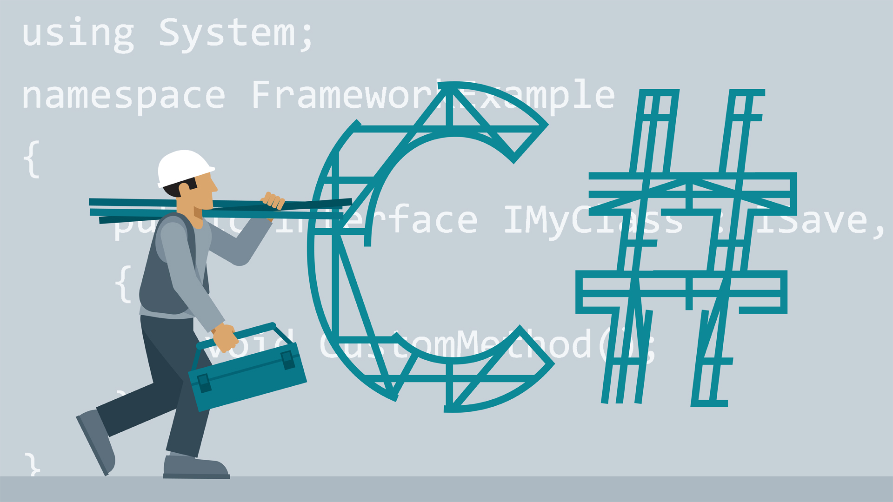

C# is most popular among bigger established businesses, often for building internal software. Because it's been around for a long time and has the backing of Microsoft, it is one of the most in-demand languages in the job market. C# has also been going through a bit of a rebirth lately, with Microsoft open sourcing the language and surrounding platform, porting it to run on Mac and Linux, and incorporating many of the best features of other languages.

Java is also a favorite of enterprise companies, but its appeal is broader as well: it's one of the most popular of all programming languages, and it's used in everything from for high-performance processing to building Android user interfaces. Because Java has been very popular for a very long time and is used in so many applications, it is also a very high-demand language. If you're interested in working for an enterprise-level company, as an Android developer, or in high-performance applications, Java could be a good language to learn.
PHP is by far the most popular backend language today, with 80 percent of websites utilizing it 'server-side'. It is perhaps best known for it's use in content management systems like Wordpress, Drupal, and Joomla. But the versatility of the language and the frameworks it powers make employment options numerous and diverse. If you're keen to work for a fast paced agency that builds websites for lots of clients, or maintain the security and stability of a huge complex of government websites, or if you like the idea of building out small sites for brands, businesses, and organizations
Ruby is a favorite language of developers building interactive web applications. If an app involves users creating accounts, entering information, and interacting with dynamic content, there's a good chance it is built with Ruby. Ruby became popular because the Rails framework, which is written with Ruby, simplified many of the common tasks associated with building web applications. It's most popular with startups and smaller companies who are looking to build their product quickly.

Front-end developers spend their time making things look and work well, obsessing over layouts, navigation, colors, and design. If this type of work appeals to you, your best bet is to take CSS and Design classes